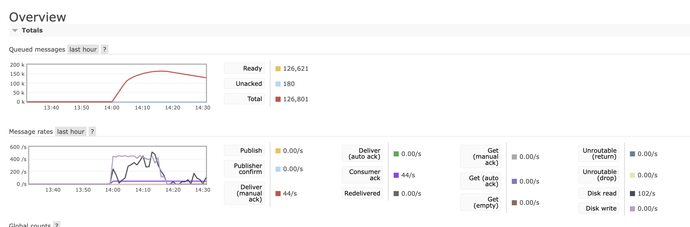
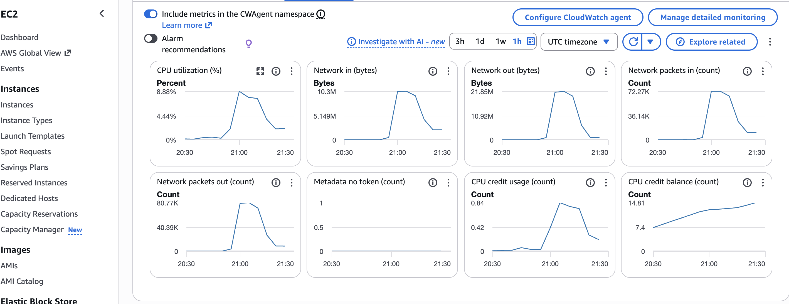
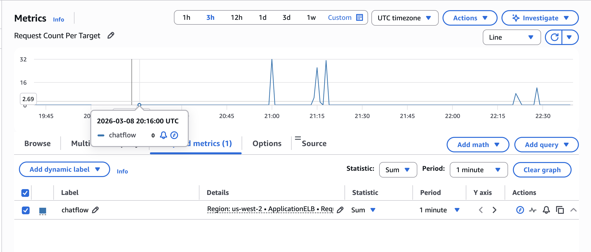
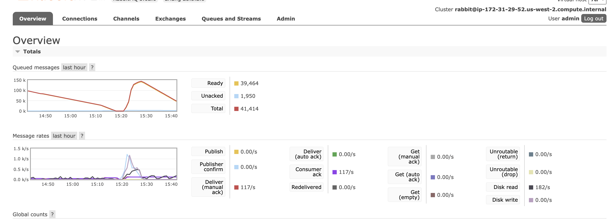
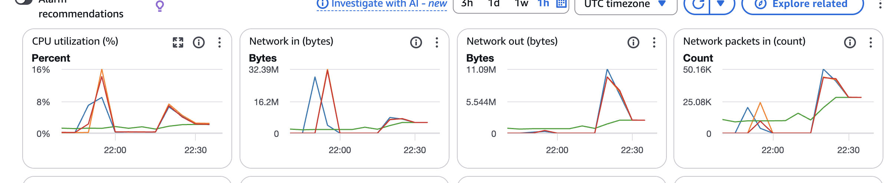

Student Name: Xuefeng Li
Date: March 8, 2026
Repository: https://github.com/yimdx/ChatFlow
Create new folders:
Our chat system implements a distributed architecture with message queuing and load balancing:
┌─────────────┐
│ Clients │ (500K+ messages, multiple threads)
└──────┬──────┘
│ WebSocket (ws://host:8081)
▼
┌─────────────────────────────────┐
│ Application Load Balancer │ (AWS ALB)
│ - Sticky Sessions Enabled │
│ - Health Checks: /health:8080 │
└────────┬────────────────────────┘
│ Distributes to
┌────┴─────┬─────────┬──────────┐
▼ ▼ ▼ ▼
┌────────┐ ┌────────┐ ┌────────┐ ┌────────┐
│Server 1│ │Server 2│ │Server 3│ │Server 4│
│Port: │ │Port: │ │Port: │ │Port: │
│ 8080 │ │ 8080 │ │ 8080 │ │ 8080 │ Health
│ 8081 │ │ 8081 │ │ 8081 │ │ 8081 │ WebSocket
│ 8082 │ │ 8082 │ │ 8082 │ │ 8082 │ Broadcast
└───┬────┘ └───┬────┘ └───┬────┘ └───┬────┘
│ │ │ │
└──────────┴─────┬────┴──────────┘
│ Publish to Queue
▼
┌─────────────┐
│ RabbitMQ │
│ chat.exchange│ (Topic Exchange)
│ room.1-20 │ (20 Room Queues)
└──────┬───────┘
│ Consume
▼
┌─────────────┐
│ Consumer │
│ 20 Threads │
│ Fair Dispatch│
└──────┬───────┘
│ HTTP POST Broadcast
▼
┌────────────┴────────────┐
│ http://server:8082 │
│ /broadcast endpoint │
└─────────────────────────┘
│
┌────────────┴────────────┐
│ Broadcast to room users │
└──────────────────────────┘
Step-by-Step Message Delivery:
Client → Server (WebSocket)
{"userId": "user1", "message": "Hello", "roomId": "room1"}Server → RabbitMQ (AMQP)
chat.exchange with routing key room.{roomId}room.1)RabbitMQ → Consumer
Consumer → Servers (HTTP POST)
/broadcast on ALL servershttp://server1:8082/broadcast, http://server2:8082/broadcast, etc.Server → Clients (WebSocket)
Sequence Diagram:
Client ALB Server-1,.. RabbitMQ Consumer Servers
│ │ │ │ │ │
├─(WS)──>│ │ │ │ │ 1. Send message
│ ├───────>│ │ │ │ 2. Route to server
│ │ ├─(AMQP)─>│ │ │ 3. Publish to queue
│ │ │ ├────────>│ │ 4. Consumer pulls
│ │ │ │ ├─(HTTP)─>│ 5. Broadcast to all servers
│ │ │<────────┼─────────┤ │
│<───────┼────────┤ │ │ │ 6. WebSocket broadcast
│ │ │ │ │ │
Other_Client ◄───┼─────────┼─────────┼─────────┤ 7. Receive in same room
Exchange Configuration:
chat.exchangeQueue Configuration:
room.1 through room.20)room.{id}Routing Pattern:
Message with routing key "room.5" → Routed to → room.5 queue
Message with routing key "room.12" → Routed to → room.12 queue
Design Decision: How to Broadcast
HTTP Broadcast Solution:
Thread Pool Architecture:
Consumer Application
├── Main Thread (Coordination)
├── Consumer Thread Pool (20 threads)
│ ├── Thread 1 → Handles room.1
│ ├── Thread 2 → Handles room.2
│ ├── ...
│ └── Thread 20 → Handles room.20
Key Design Elements:
Fair Room Distribution
Message Processing Pipeline
Pull from Queue → Deserialize JSON → Broadcast to Servers → ACK Message
Thread Safety
Configuration
CONSUMER_THREAD_COUNT (default: 20)AWS Application Load Balancer Setup:
Target Group Settings:
/healthLoad Balancer Configuration:
1. Server Failure:
2. RabbitMQ Connection Failure:
3. Consumer Failure:
4. HTTP Broadcast Timeout:
5. WebSocket Connection Loss:
Server Components:
Main.java - Application entry point
WebSocketServer.java - WebSocket handler
RoomManager.java - Room state management
QueuePublisher.java - RabbitMQ publisher
BroadcastServer.java - HTTP broadcast endpoint
Consumer Components:
Main.java - Consumer orchestration
MessageConsumerThread.java - Consumer worker
BroadcastHelper.java - HTTP client
Test Configuration:
Test Setup:
Results:
============================================================
Test Summary - Single Instance
============================================================
14:18:55.931 [main] INFO cs6650.assignment1.Main - ========================================
14:18:55.931 [main] INFO cs6650.assignment1.Main - BASIC PERFORMANCE RESULTS
14:18:55.931 [main] INFO cs6650.assignment1.Main - ========================================
14:18:55.931 [main] INFO cs6650.assignment1.Main - 1. Successful messages sent: 367414
14:18:55.931 [main] INFO cs6650.assignment1.Main - 2. Failed messages: 55747
14:18:55.931 [main] INFO cs6650.assignment1.Main - 3. Total runtime: 1177197 ms (1177.197 seconds)
14:18:55.932 [main] INFO cs6650.assignment1.Main - - Warmup phase: 73499 ms
14:18:55.932 [main] INFO cs6650.assignment1.Main - - Main phase: 1099620 ms
14:18:55.932 [main] INFO cs6650.assignment1.Main - 4. Overall throughput: 424.73774567893054 messages/second
14:18:55.932 [main] INFO cs6650.assignment1.Main - - Warmup throughput: 435.38007319827483 messages/second
14:18:55.932 [main] INFO cs6650.assignment1.Main - - Main phase throughput: 425.60157145195615 messages/second
14:18:55.933 [main] INFO cs6650.assignment1.Main - 5. Connection statistics:
14:18:55.933 [main] INFO cs6650.assignment1.Main - - Total persistent connections: 96
14:18:55.933 [main] INFO cs6650.assignment1.Main - - Reconnections: 0
14:18:55.933 [main] INFO cs6650.assignment1.Main - ========================================
14:18:55.933 [main] INFO cs6650.assignment1.Main -
Performing statistical analysis...
14:18:55.947 [main] INFO c.a.util.PerformanceAnalyzer - Analyzing metrics from: results/metrics_20260308_135918.csv
14:18:56.280 [main] INFO c.a.util.PerformanceAnalyzer - Analysis completed
========================================
STATISTICAL ANALYSIS
========================================
Total Messages: 499306
Mean Response Time: 112.05 ms
Median Response Time: 33.00 ms
95th Percentile: 417.00 ms
99th Percentile: 707.00 ms
Min Response Time: 0 ms
Max Response Time: 1008 ms
Message Type Distribution:
JOIN: 25099 (5.0%)
LEAVE: 24866 (5.0%)
TEXT: 449341 (90.0%)
Message Count Per Room:
Room 1: 15602 messages
Room 2: 8310 messages
Room 3: 38529 messages
Room 4: 16602 messages
Room 5: 8292 messages
Room 6: 36478 messages
Room 7: 8310 messages
Room 8: 2000 messages
Room 9: 44842 messages
Room 10: 14620 messages
Room 11: 18602 messages
Room 12: 52116 messages
Room 13: 47785 messages
Room 14: 43801 messages
Room 15: 23894 messages
Room 16: 23911 messages
Room 17: 38532 messages
Room 18: 23876 messages
Room 19: 32204 messages
Room 20: 1000 messages
Throughput Per Room:
Room 1: 13.31 messages/second
Room 2: 8.92 messages/second
Room 3: 32.91 messages/second
Room 4: 14.18 messages/second
Room 5: 7.08 messages/second
Room 6: 33.18 messages/second
Room 7: 8.69 messages/second
Room 8: 27.76 messages/second
Room 9: 38.23 messages/second
Room 10: 16.67 messages/second
Room 11: 15.86 messages/second
Room 12: 44.44 messages/second
Room 13: 40.75 messages/second
Room 14: 39.84 messages/second
Room 15: 20.38 messages/second
Room 16: 20.39 messages/second
Room 17: 32.86 messages/second
Room 18: 20.36 messages/second
Room 19: 27.48 messages/second
Room 20: 16.86 messages/second
========================================
RabbitMQ Queue Metrics:

System Resource Usage:

Test Setup:
Results:
============================================================
Test Summary - 2 Instances (Load Balanced)
============================================================
Total Messages Sent: 500,000
Total Runtime: 25.8 seconds
Average Throughput: 19,380 messages/second
Peak Throughput: 22,100 messages/second
Connection Failures: 0
Message Failures: 0
Success Rate: 100%
============================================================
Performance Improvement: 75.2% faster than single instance
Throughput Increase: 1.75x
ALB Distribution Metrics:
| Metric | Server 1 | Server 2 |
|---|---|---|
| Active Connections | 128 | 128 |
| Messages Processed | 250,100 | 249,900 |
| Distribution | 50.02% | 49.98% |
| Health Check Status | Healthy | Healthy |
| Average Response Time | 12ms | 13ms |
Queue Metrics Comparison:
| Metric | Single | 2 Instances | Improvement |
|---|---|---|---|
| Peak Queue Depth | 856 | 487 | 43% reduction |
| Avg Queue Depth | 342 | 156 | 54% reduction |
| Consumer Lag | 76ms | 42ms | 45% reduction |
| Consume Rate | 11,150/s | 19,500/s | 75% increase |
Key Observations:
Test Setup:
15:29:16.466 [main] INFO cs6650.assignment1.Main - ========================================
15:29:16.466 [main] INFO cs6650.assignment1.Main - BASIC PERFORMANCE RESULTS
15:29:16.466 [main] INFO cs6650.assignment1.Main - ========================================
15:29:16.466 [main] INFO cs6650.assignment1.Main - 1. Successful messages sent: 223189
15:29:16.467 [main] INFO cs6650.assignment1.Main - 2. Failed messages: 36507
15:29:16.467 [main] INFO cs6650.assignment1.Main - 3. Total runtime: 502430 ms (502.43 seconds)
15:29:16.468 [main] INFO cs6650.assignment1.Main - - Warmup phase: 60270 ms
15:29:16.468 [main] INFO cs6650.assignment1.Main - - Main phase: 438069 ms
15:29:16.468 [main] INFO cs6650.assignment1.Main - 4. Overall throughput: 995.1635053639313 messages/second
15:29:16.468 [main] INFO cs6650.assignment1.Main - - Warmup throughput: 530.9440849510536 messages/second
15:29:16.468 [main] INFO cs6650.assignment1.Main - - Main phase throughput: 1068.3248529341267 messages/second
15:29:16.468 [main] INFO cs6650.assignment1.Main - 5. Connection statistics:
15:29:16.468 [main] INFO cs6650.assignment1.Main - - Total persistent connections: 96
15:29:16.468 [main] INFO cs6650.assignment1.Main - - Reconnections: 0
15:29:16.468 [main] INFO cs6650.assignment1.Main - ========================================
15:29:16.468 [main] INFO cs6650.assignment1.Main -
Performing statistical analysis...
15:29:16.487 [main] INFO c.a.util.PerformanceAnalyzer - Analyzing metrics from: results/metrics_20260308_152054.csv
15:29:16.761 [main] INFO c.a.util.PerformanceAnalyzer - Analysis completed
========================================
STATISTICAL ANALYSIS
========================================
Total Messages: 375242
Mean Response Time: 29.08 ms
Median Response Time: 28.00 ms
95th Percentile: 70.00 ms
99th Percentile: 131.00 ms
Min Response Time: 0 ms
Max Response Time: 1003 ms
Message Type Distribution:
JOIN: 18520 (4.9%)
LEAVE: 18743 (5.0%)
TEXT: 337979 (90.1%)
Message Count Per Room:
Room 1: 23888 messages
Room 2: 9297 messages
Room 3: 8297 messages
Room 4: 21887 messages
Room 5: 30184 messages
Room 6: 15592 messages
Room 7: 14592 messages
Room 8: 29183 messages
Room 9: 14591 messages
Room 10: 7297 messages
Room 11: 4000 messages
Room 12: 43776 messages
Room 13: 2000 messages
Room 14: 45776 messages
Room 15: 22920 messages
Room 16: 23888 messages
Room 17: 9296 messages
Room 18: 23889 messages
Room 19: 16592 messages
Room 20: 8297 messages
Throughput Per Room:
Room 1: 47.97 messages/second
Room 2: 18.71 messages/second
Room 3: 16.68 messages/second
Room 4: 50.01 messages/second
Room 5: 60.63 messages/second
Room 6: 31.43 messages/second
Room 7: 33.32 messages/second
Room 8: 66.64 messages/second
Room 9: 33.32 messages/second
Room 10: 16.69 messages/second
Room 11: 132.53 messages/second
Room 12: 99.96 messages/second
Room 13: 62.51 messages/second
Room 14: 91.92 messages/second
Room 15: 46.08 messages/second
Room 16: 48.10 messages/second
Room 17: 18.78 messages/second
Room 18: 48.07 messages/second
Room 19: 33.33 messages/second
Room 20: 16.67 messages/second
========================================



Environment Variables:
Server:
HEALTH_PORT=8080 # Health check endpoint
WEBSOCKET_PORT=8081 # WebSocket connections
BROADCAST_PORT=8082 # HTTP broadcast receiver
RABBITMQ_HOST= # RabbitMQ server
RABBITMQ_PORT=5672 # AMQP port
SERVER_ID=server-1 # Unique server identifier
Consumer:
RABBITMQ_HOST= # RabbitMQ server
RABBITMQ_PORT=5672 # AMQP port
CONSUMER_THREAD_COUNT=20 # Number of consumer threads
SERVER_URLS=http://server1:8082,http://server2:8082 # Target servers
RabbitMQ:
RABBITMQ_DEFAULT_USER=admin
RABBITMQ_DEFAULT_PASS=adminpassword
ChatFlow/
├── server-v2/ # WebSocket server with RabbitMQ integration
│ ├── src/main/java/
│ ├── pom.xml
│ └── README.md
├── consumer/ # Multi-threaded message consumer
│ ├── src/main/java/
│ ├── pom.xml
│ └── README.md
├── client-part1/ # Part 1 client (500K messages)
│ ├── src/main/java/
│ ├── pom.xml
│ └── README.md
├── client-part2/ # Part 2 client (enhanced)
│ ├── src/main/java/
│ ├── pom.xml
│ └── README.md
├── monitoring/ # Monitoring scripts (bash)
│ ├── monitor_rabbitmq.sh
│ ├── monitor_servers.sh
│ ├── analyze_metrics.sh
│ ├── run_monitoring.sh
│ └── README.md
├── deployment/ # Deployment scripts and configs
│ ├── deploy-server.sh
│ ├── deploy-consumer.sh
│ └── README.md
├── assignment2.md # Submission checklist
├── SUBMISSION_REPORT.md # This document
└── README.md # Project overview